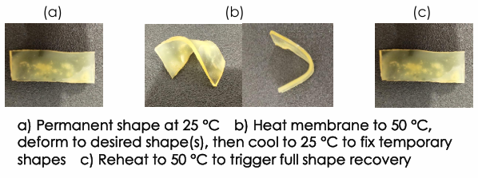
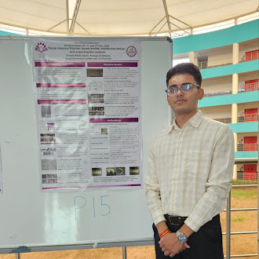

SMP Emitter Membrane Design
ADVISOR: DR. PUNNAG CHATTERJEE // LAB: SMART DYNAMICAL SYSTEMS (SDSL) // IIT DHARWAD
Objective: To design, fabricate, and experimentally evaluate a catalyst-free, biodegradable Shape Memory Polymer (SMP) membrane for potential use in emitter systems.
Shape Memory Polymers are smart materials that can store a temporary shape and recover their original form when heated. Unlike traditional actuators, they offer large elastic deformation, tunable mechanical properties, and the ability to function without complex motors or gears.
02. Literature Review & Applications
A comprehensive review of 10 key SMP technologies was conducted to identify the ideal material for membrane-based actuation.
1. SMP Suture
Lendlein & Langer (2002)
A biodegradable OCL-ODX based suture that automatically tightens wounds by recovering its original shape at body temperature (37-40°C).
2. SMP Staple
Huang et al. (2013)
A PLA-based biodegradable staple. It is programmed to shrink upon heating (~55°C), pulling tissue edges together for closure without manual tools.
3. SMP Coil
Sreelatha et al. (2019)
UHMWPE-based coiled actuator fabricated via twist insertion. Achieves high contraction (87%) suitable for lightweight artificial muscles.
4. SMP Hinge
Liu et al. (2018)
Carbon-fiber reinforced epoxy hinge for aerospace. Deploys structures (like solar arrays) reliably when heated above 100°C.
5. Artificial Muscle
Kim et al. (2002)
High-energy-density PPG-MPU film. Uses nanostructure hydrogen bonding to lift loads up to 5000x its weight with rapid actuation.
6. SMP Stent
Yakacki et al. (2007)
Acrylate-based polymer network that expands at body temperature. Eliminates the need for balloon expansion in vascular surgeries.
7. PODDC SMP
Wong et al. (2023)
Catalyst-free, biodegradable polymer with a low activation temperature (~39°C). Selected for this project due to its safe biomedical profile.
8. Magnetic SMP
Qiji Ze et al. (2019)
Composite containing Fe3O4 and NdFeB particles. Heats up and actuates remotely under AC magnetic fields for contactless control.
9. PLMC Scaffold
Zhang et al. (2014)
Electrospun DLLA-TMC copolymer. A nanofibrous membrane that recovers shape rapidly (6-12 sec) for bone tissue engineering.
10. Self-Healing SMP
Scalet et al. (2019)
PCLDMA-UPyMA based polymer. Uses reversible hydrogen bonding to automatically heal cuts/damage while retaining shape memory properties.
03. Material Selection: PODDC
Based on the review, PODDC (Poly(octanediol-co-citrate)-co-dodecanedioate) was selected for this study.
- Low Activation Temp: Triggers around ~39°C, making it safe for biomedical and mild-thermal applications.
- Catalyst-Free: Synthesized using citric acid, making it non-toxic and biodegradable.
- Performance: Exhibits fast and complete recovery (20-30 seconds).
04. Fabrication Methodology
The PODDC membrane was synthesized and cast using the following procedure:
Mold Preparation
Clean Petri dish with ethanol. Apply Kapton tape as a non-stick surface and create spacers to define the membrane thickness.
Monomer Weighing
Measure monomers in a
1 : 0.5 : 0.5 molar ratio of 1,8-Octanediol (OD), Dodecanedioic acid (DDA), and Citric acid (CA).
Melt Preparation
Heat the mixture at
100-110°C while stirring until a uniform, transparent viscous melt is formed.
Casting
Pour the hot melt into the pre-warmed mold (60°C) and spread evenly using a warm spatula.
Two-Stage Curing
Stage I: Cure at 100°C for 24 hours (Partial crosslinking).
Stage II: Cure at 120°C for 24 hours (Full crosslinking).
05. Experimental Results
The fabricated membrane demonstrated excellent shape memory behavior. The testing cycle involved:
- Permanent Shape: Established at 25°C.
- Programming: Heated to 50°C, deformed into a temporary shape, and cooled to 25°C to "freeze" the structure.
- Recovery: Reheated to 50°C, triggering a return to the original flat membrane shape.

a) Permanent shape at 25 °C.
b) Heat membrane to 50 °C, deform to desired shape(s), then cool to 25 °C to fix temporary shapes.
c) Reheat to 50 °C to trigger full shape recovery.
Conclusion: The PODDC membrane successfully proved viable for low-temperature actuation, confirming its potential for smart emitter systems where pressure regulation or flow control is required.
06. Shodha Yantriki-25 Symposium
Presented this research at the 5th MMAE Symposium at IIT Dharwad (Dec 2025).

"Shape Memory Polymer based Emitter Membrane Design"
View Full Poster PDF →